Abra o Studio e escolha BASEPLATE

Foto da tela.
Projeto novo, como sempre. Clique no modelo Baseplate.
- Abriu o projeto antigo
- Feche a aba e volte para o Início.
Vá para a aba MODELO
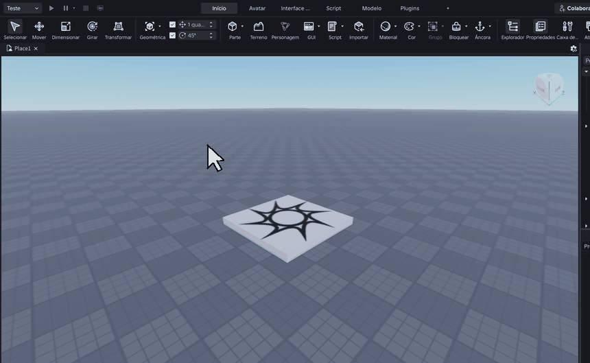
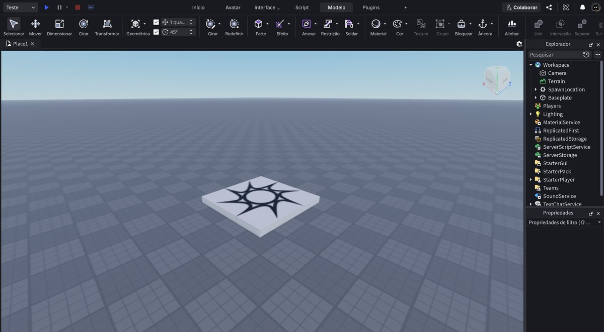
O clipe repete sozinho. Repare onde o cursor vai antes de clicar.
Clique em Modelo.
- Não acho
- Fica entre Script e Plugins.
Ache o ServerScriptService na lista
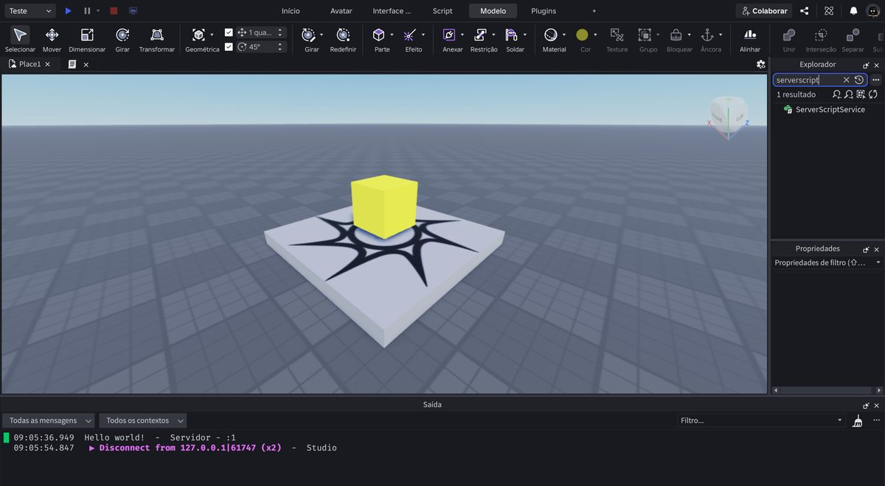
Foto da tela.
Role a lista da direita para baixo até achar ServerScriptService.
É uma caixa onde ficam scripts que valem para o jogo inteiro — não para uma peça só. O placar é assim: é do jogo, não de um bloco.
- Não consigo rolar a lista
- Use a rodinha do mouse em cima da lista, ou escreva server na caixa Pesquisar no alto dela.
- Tem vários nomes parecidos
- Você quer o ServerScriptService, não o ServerStorage.
Coloque um Script nele
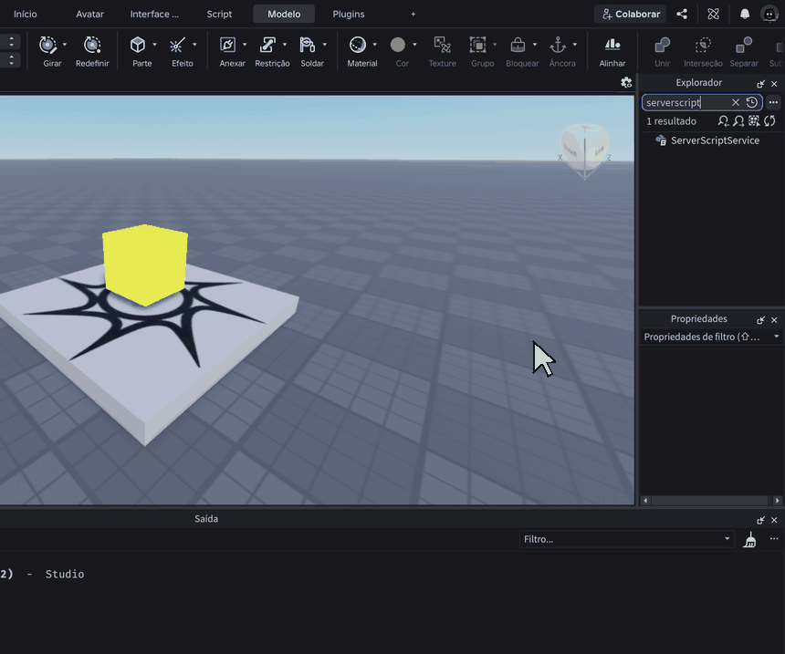
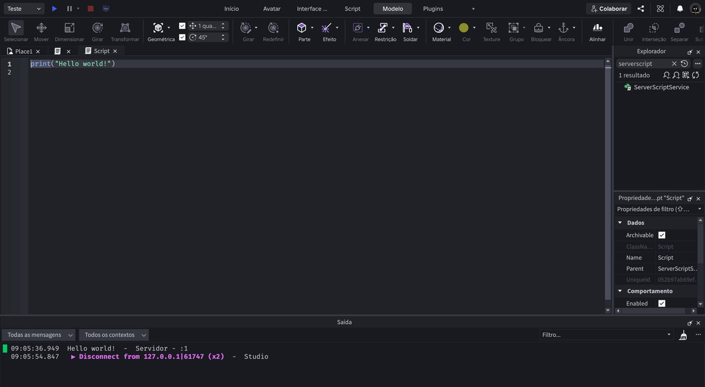
O clipe repete sozinho. Repare onde o cursor vai antes de clicar.
Clique uma vez em ServerScriptService. Aparece um + depois do nome. Clique no + e escolha Script.
- Não aparece o +
- Clique uma vez na linha primeiro.
- O Script foi para outro lugar
- Apague com Delete e refaça com o ServerScriptService selecionado.
Apague a linha pronta
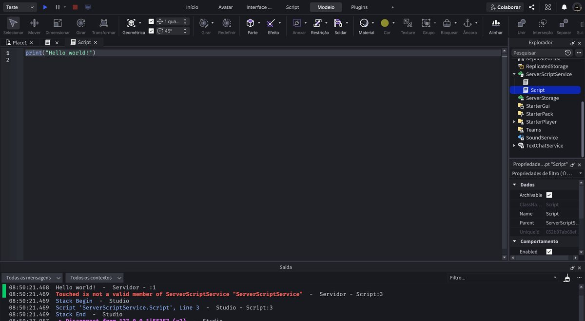
Foto da tela.
Como sempre, o script nasce com print("Hello world!"). Apague a linha inteira.
- Sumiu a tela do script
- Duplo clique no Script na lista.
Escreva o placar
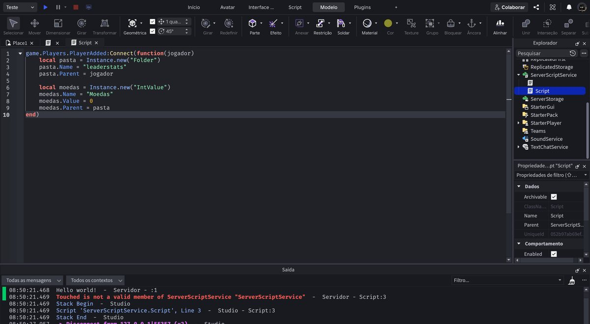
Foto da tela.
Este é o código que cria o placar. Nove linhas:
- game.Players.PlayerAdded:Connect(function(jogador)
- local pasta = Instance.new("Folder")
- pasta.Name = "leaderstats"
- pasta.Parent = jogador
- local moedas = Instance.new("IntValue")
- moedas.Name = "Moedas"
- moedas.Value = 0
- moedas.Parent = pasta
- end)
Cuidado com três coisas: leaderstats é tudo minúsculo e entre aspas; IntValue tem I e V maiúsculos; e o Moedas entre aspas é o nome que vai aparecer na tela.
- Risco vermelho no fim
- Falta o end) da última linha — com o parêntese.
- Escrevi Leaderstats com L maiúsculo
- Não funciona. Tem que ser leaderstats, tudo minúsculo. É a Roblox que exige esse nome exato.
- O editor completa sozinho
- Aperte Esc para dispensar a sugestão.
Entenda o placar
Foto da tela.
game.Players.PlayerAdded — “quando um jogador entrar no jogo”.
Instance.new("Folder") — cria uma pasta nova, do nada. Instance.new é como o código fabrica coisas.
pasta.Name = "leaderstats" — a pasta ganha esse nome. É esse nome que a Roblox procura para desenhar o placar na tela. Qualquer outro nome e não aparece nada.
Instance.new("IntValue") — cria um número. Int é número inteiro: 0, 1, 2. Sem vírgula.
moedas.Parent = pasta — põe o número dentro da pasta. É a pasta dentro do jogador, e o número dentro da pasta.
- O que é Parent de novo?
- É “quem está segurando”. Aqui você está dizendo onde cada coisa nova vai morar.
Volte para o mundo e jogue
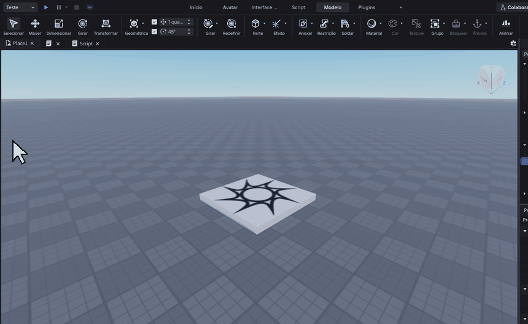
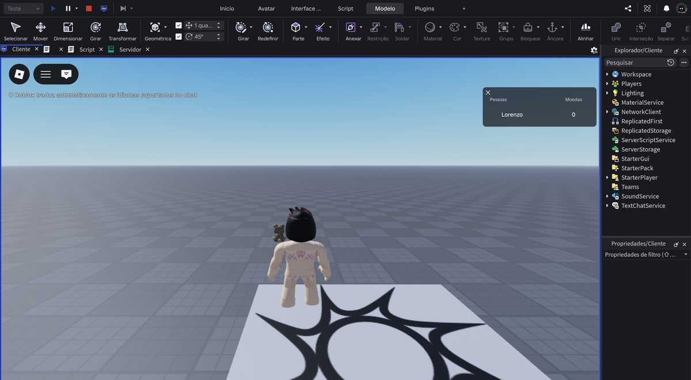
O clipe repete sozinho. Repare onde o cursor vai antes de clicar.
Clique na aba Place1 e depois no ▶.
Olhe o canto superior direito da tela do jogo.
- Não apareceu o placar
- Quase sempre é o nome: confira se está leaderstats, tudo minúsculo, entre aspas.
- Apareceu só o nome, sem coluna
- Faltou a parte do IntValue. Confira as quatro últimas linhas.
- O quadro some
- Clique no x dele sem querer fecha. Saia e entre no jogo de novo.
Pare o jogo
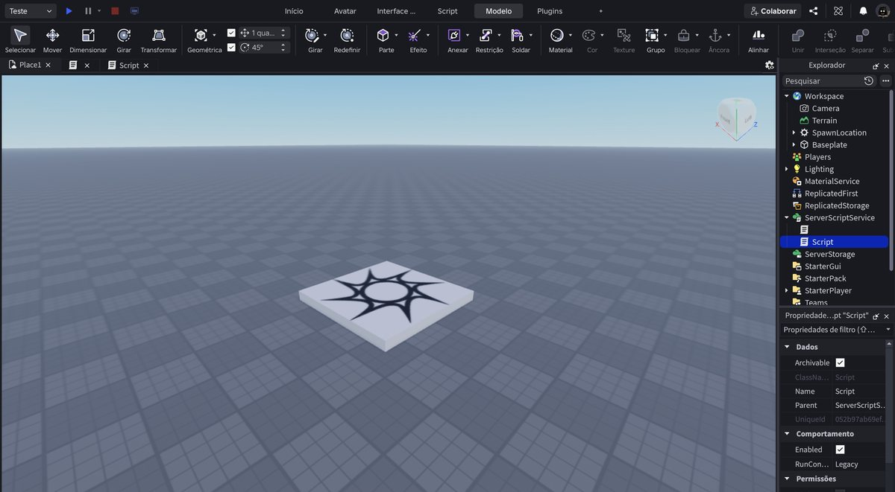
Foto da tela.
Quadrado vermelho. Agora vamos fazer a moeda.
- Continuo no jogo
- Aperte o quadrado, não o ▶.
Crie a moeda
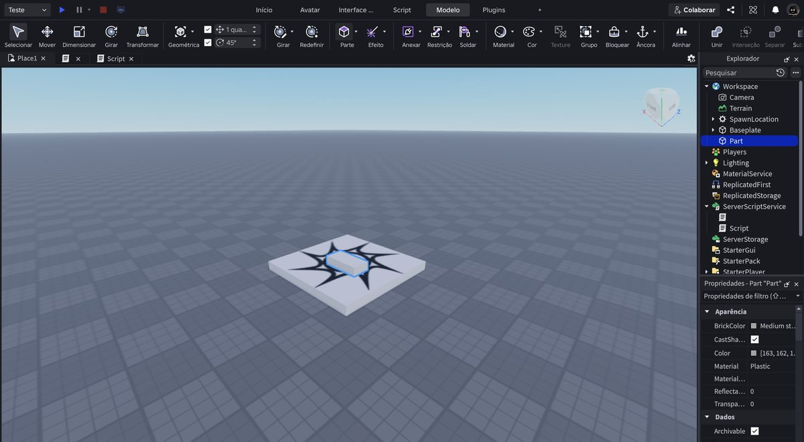
O clipe repete sozinho. Repare onde o cursor vai antes de clicar.
Clique no desenho do botão Parte.
- Nada aconteceu
- Você clicou na palavra, não no desenho.
Leve a câmera e ancore
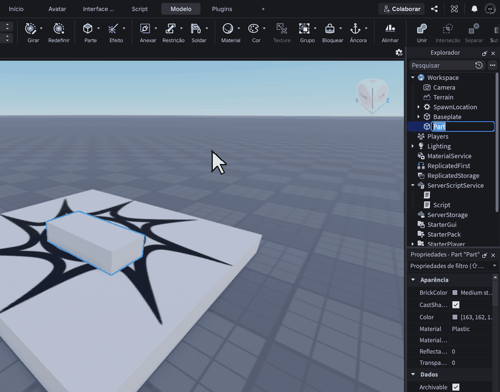
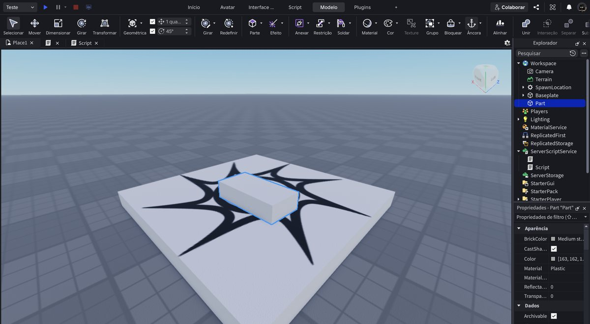
O clipe repete sozinho. Repare onde o cursor vai antes de clicar.
Clique em Part na lista, mouse no mundo 3D, tecla F, depois S algumas vezes.
Com a peça selecionada, clique em Âncora. Moeda que cai não serve.
- F não fez nada
- O mouse tem que estar sobre o mundo 3D.
Pinte de amarelo
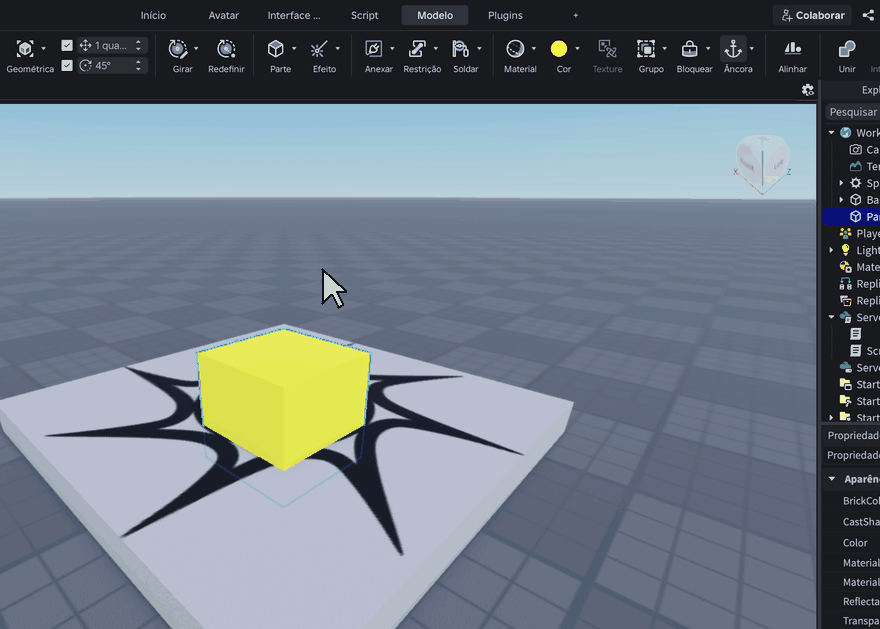
O clipe repete sozinho. Repare onde o cursor vai antes de clicar.
Setinha do Cor → hexágono amarelo → clique no círculo do botão Cor.
- Não pintou
- Falta o clique no círculo do botão Cor.
Chame de MOEDA
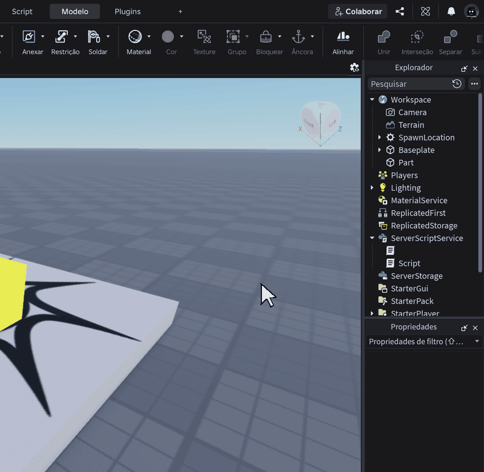
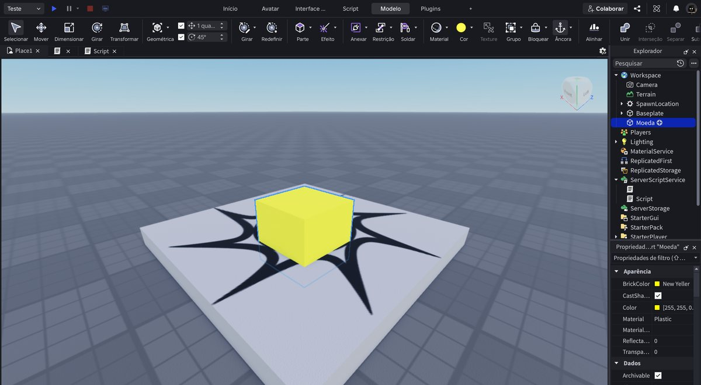
O clipe repete sozinho. Repare onde o cursor vai antes de clicar.
Botão direito na peça, na lista → Renomear → Moeda → Enter.
- Voltou o nome antigo
- Termine com Enter.
Ponha um Script dentro da Moeda
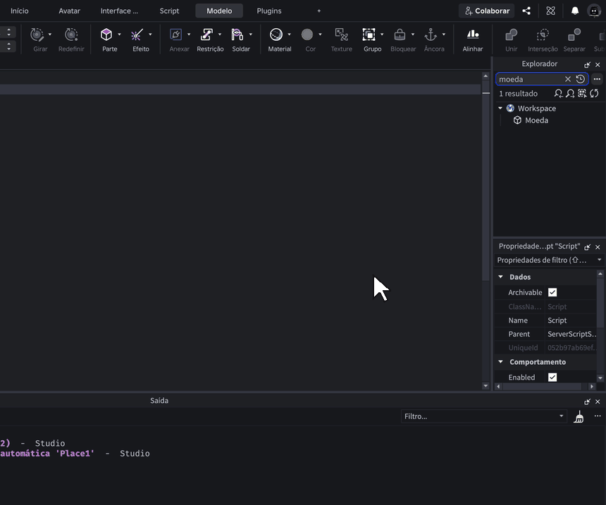
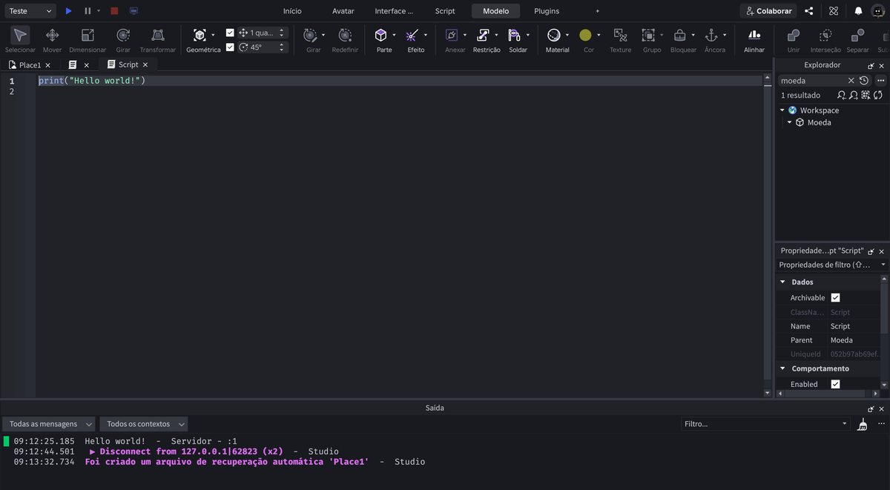
O clipe repete sozinho. Repare onde o cursor vai antes de clicar.
Clique em Moeda na lista, clique no + e escolha Script.
Repare: este script é da peça. O outro era do jogo inteiro. São coisas diferentes.
- Ficou fora da Moeda
- Arraste-o por cima da palavra Moeda na lista.
- Abriu o script errado
- Feche as abas de script lá em cima e dê duplo clique no Script que está dentro da Moeda.
Escreva o código da moeda
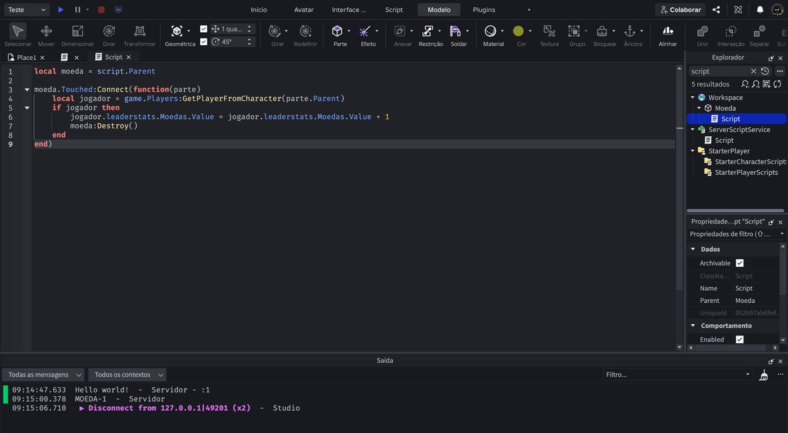
Foto da tela.
Apague a linha pronta e escreva:
- local moeda = script.Parent
- moeda.Touched:Connect(function(parte)
- local jogador = game.Players:GetPlayerFromCharacter(parte.Parent)
- if jogador then
- jogador.leaderstats.Moedas.Value = jogador.leaderstats.Moedas.Value + 1
- moeda:Destroy()
- end
- end)
GetPlayerFromCharacter é uma palavra só, com quatro maiúsculas. Copie com calma.
- Risco vermelho em GetPlayerFromCharacter
- Confira as maiúsculas: G, P, F, C.
- Risco no fim
- Falta um end ou o parêntese final.
Entenda a moeda
Foto da tela.
GetPlayerFromCharacter(parte.Parent) — “descubra qual jogador é esse boneco”. Na aula da lava a gente só perguntava se era um boneco; agora precisamos saber de quem é, para somar no placar certo.
jogador.leaderstats.Moedas.Value + 1 — pega o número que está lá e põe um a mais. Repare no caminho: jogador → pasta → número → valor.
moeda:Destroy() — a moeda se apaga. Por isso você não pega a mesma moeda duas vezes.
- O que aconteceria sem o Destroy?
- A moeda ficaria lá e o número subiria sem parar enquanto você encostasse.
Jogue e pegue a moeda
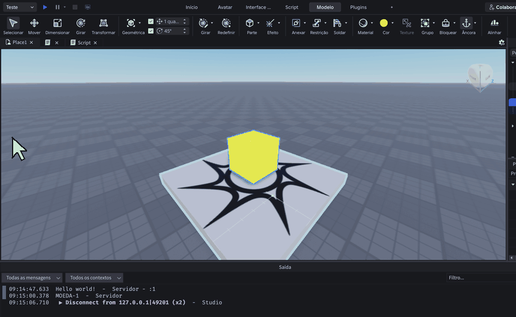
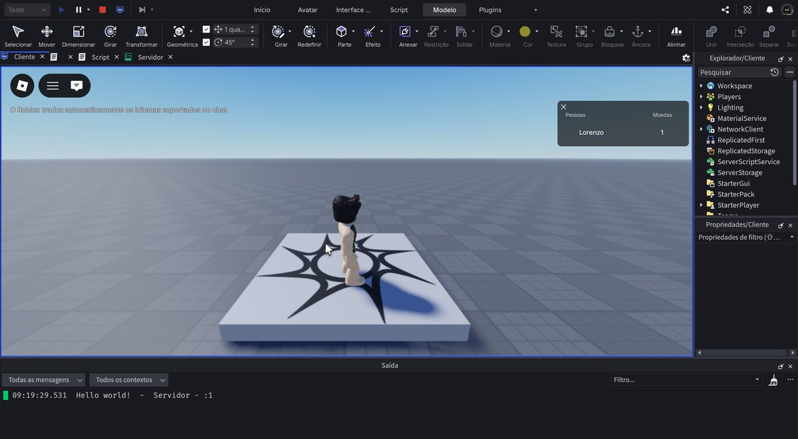
O clipe repete sozinho. Repare onde o cursor vai antes de clicar.
Volte para Place1 e aperte o ▶.
Ande até a moeda amarela e encoste nela.
- A moeda some mas o número não muda
- O placar não existe. Volte ao passo 8 e confira o leaderstats.
- O número muda mas a moeda fica
- Faltou o moeda:Destroy().
- Não acontece nada
- Confira se o Script está dentro da Moeda, e se não sobrou risco vermelho.
Faça um monte de moedas
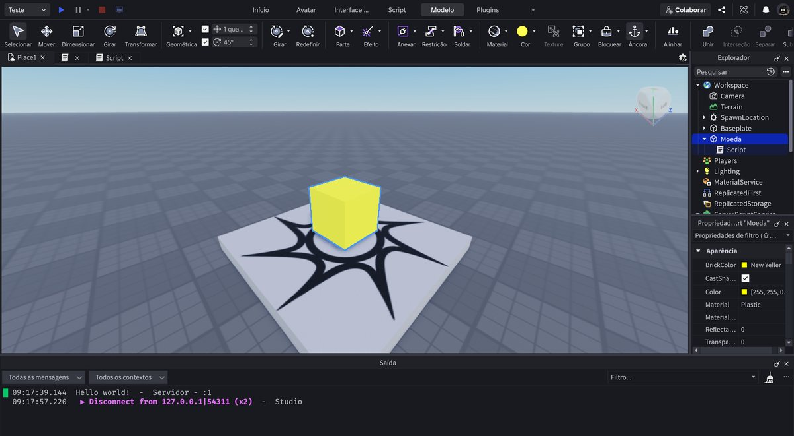
Foto da tela.
Com o jogo parado: botão direito na Moeda → Duplicar. Depois use a ferramenta Mover e arraste a cópia pela seta.
Faça cinco ou seis, espalhadas. Cada cópia já vem com o script dentro e vale um ponto.
- A cópia não soma
- Você duplicou antes de pôr o script. Apague e duplique a Moeda que tem o Script dentro.
- As moedas ficaram no mesmo lugar
- A cópia nasce em cima da original. Arraste-a pela seta.
Salve
Foto da tela.
Ctrl + S → Salvar em arquivo → nome moedas.
Se quiser, publique também: Arquivo → Publicar na Roblox, como você aprendeu na aula passada.
- Quero publicar mas esqueci como
- Volte na Aula 4, passo 9.